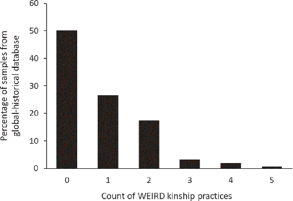
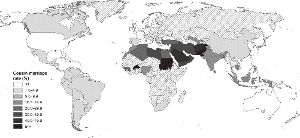
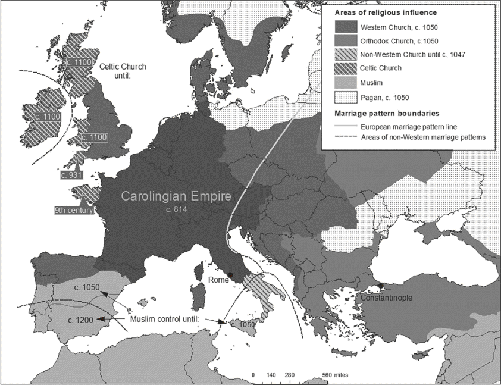

The families found in WEIRD societies are peculiar, even exotic, from a global and historical perspective. We don’t have lineages or large kindreds that stretch out in all directions, entangling us in a web of familial responsibilities. Our identity, sense of self, legal existence, and personal security are not tied to membership in a house or clan, or to our position in a relational network. We limit ourselves to one spouse (at a time), and social norms usually exclude us from marrying relatives, including our cousins, nieces, stepchildren, and in-laws. Instead of arranged marriages, our “love marriages” are usually motivated by mutual affection and compatibility. Ideally, newly married couples set up residence independent of their parents, establishing what anthropologists call neolocal residence. Unlike patrilineal clans or segmentary lineages, relatedness among WEIRD people is reckoned bilaterally, by tracking descent equally through both fathers and mothers. Property is individually owned, and bequests are personal decisions. We don’t, for example, have claims on the land owned by our brother, and we have no veto on his decision to sell it. Nuclear families form a distinct core in our societies but reside together only until the children marry to form new households. Beyond these small families, our kinship ties are fewer and weaker than those of most other societies. Though kinship does assert itself from time to time, such as when U.S. presidents appoint their children or in-laws to key White House posts, it usually remains subordinate to higher-level political, social, and economic institutions.1
Let’s begin by putting some numbers on the kinship patterns described above using the Ethnographic Atlas, an anthropological database of over 1,200 societies (ethnolinguistic groups) that captures life prior to industrialization. Table 5.1 shows five of the kinship traits that characterize WEIRD societies: (1) bilateral descent, (2) little or no cousin marriage, (3) monogamous marriage only, (4) nuclear family households, and (5) neolocal residence. The frequencies of these WEIRD kinship traits vary from a high of 28 percent, for bilateral descent, to a low of 5 percent, for neolocal residence. This suggests that most societies have long lived in extended family households, permitted polygamous marriage, encouraged cousin marriage, and tracked descent primarily through one parent. Taken separately, each trait is uncommon, but in combination, this package is extremely rare—WEIRD.2
| WEIRD Traits | % of Societies |
|---|---|
| 1 Bilateral descent—relatedness is traced (roughly) equally through both parents | 28% |
| 2 Little or no marriage to cousins or other relatives | 25% |
| 3 Monogamous marriage—people are permitted to have only one spouse at a time | 15% |
| 4 Nuclear families—domestic life is organized around married couples and their children | 8% |
| 5 Neolocal residence—newly married couples set up a separate household | 5% |
To see just how rare these patterns are, we can count how many of these kinship traits are possessed by each society in the Atlas. This gives us a score from zero to five that tells us how WEIRD a society is in terms of kinship. Figure 5.1 shows the results: over half of the societies in the Atlas (50.2 percent) possess zero of these WEIRD kinship traits, and 77 percent possess either zero or only one of these traits. At the other end, fewer than 3 percent of societies possess at least four of them, and only 0.7 percent possess all five traits. Notably, these tiny percentages include a small sampling of European societies, like the Irish and French Canadians of 1930. So, 99.3 percent of societies in this global anthropological database deviate from the WEIRD pattern.3
The aspects of traditional kinship found in the Atlas open a window not only on the world prior to industrialization but also on the social norms that remain important even today. Consider this question: How many people do you personally know who married their cousins?
If you know none, that’s WEIRD, since 1 in 10 marriages around the world today is to a cousin or other relative. Based on data from the latter half of the 20th century, Figure 5.2 maps the frequency with which people marry their first or second cousins or other close relatives (uncles, nieces). Remember that second cousins share a pair of great-grandparents. For the sake of simplicity, and because most marriages to relatives involve cousins, I’ll refer to this as cousin marriage. At one end of the spectrum, we see that people in the Middle East and Africa marry relatives at least a quarter of the time, though in some places these numbers reach up above 50 percent—so over half of marriages are among relatives. In the middle, countries like India and China have moderate rates of cousin marriage, though it’s worth knowing that in China, when the government began promoting “modern” (Western) marriage in the 1950s, it outlawed uncle-niece marriage and, later, first cousin marriage. By contrast, really WEIRD countries like the United States, Britain, and the Netherlands have rates of about 0.2 percent, or one-fifth of 1 percent.5


So, how did WEIRD kinship become so unusual?
Many assume that the peculiar nature of WEIRD families is a product of the Industrial Revolution, economic prosperity, urbanization, and modern state-level institutions. This is sensible, and certainly appears to be what’s happening in much of the world today, through globalization. As non-WEIRD societies have entered the global economy, urbanized, and adopted the formal secular institutions of WEIRD societies (e.g., Western civil codes, constitutions, etc.), their intensive kin-based institutions have often begun to slowly deteriorate, resulting in the spread of WEIRD kinship practices, particularly among educated urbanites. Nevertheless, against this onslaught of global economic and political forces, intensive kin-based institutions have proven themselves to be remarkably resilient.6
In Europe, however, the historical order was reversed. First, between about 400 and 1200 CE, the intensive kin-based institutions of many European tribal populations were slowly degraded, dismantled, and eventually demolished by the branch of Christianity that evolved into the Roman Catholic Church—hereinafter the Western Church or just the Church. Then, from the ruins of their traditional social structures, people began to form new voluntary associations based on shared interests or beliefs rather than on kinship or tribal affiliations. In these European regions, societal evolution was blocked from the usual avenues—intensifying kinship—and then shunted down an unlikely side road.7
The key point for now is that the dissolution of intensive kin-based institutions and the gradual creation of independent monogamous nuclear families represents the proverbial pebble that started the avalanche to the modern world in Europe. Now let’s look at how this pebble was first inadvertently kicked by the Church.
The roots of WEIRD families can be found in the slowly expanding package of doctrines, prohibitions, and prescriptions that the Church gradually adopted and energetically promoted, starting before the end of the Western Roman Empire. For centuries, during Late Antiquity and well into the Middle Ages, the Church’s marriage and family policies were part of a larger cultural evolutionary process in which its beliefs and practices were competing with many other gods, spirits, rituals, and institutional forms for the hearts, minds, and souls of Europeans. The Church vied against ancestor gods, traditional tribal deities such as Thor and Odin, the old Roman state religion (Jupiter, Mercury, etc.), and various Mediterranean salvation cults (Isis and Mithras, among others), as well as diverse variants of Christianity. These other Christian sects were serious competition and included the Nestorian, Coptic, Syrian, Arian, and Armenian Churches. The Goths, for example, who played a role in the fall of the Western Roman Empire, were not pagans but Arian Christians. Arians, major heretics in the Western Church, held the astonishing view that God the Son (Jesus) was created by God the Father at a particular point in time, making the Son subordinate to the Father.
Today, it’s clear that the Western Church won this religious competition hands down. Christianity is the world’s largest religion, having captured over 30 percent of the global population. However, 85–90 percent of modern Christians trace their cultural descent through the Roman Catholic Church, back to the Western Church in Rome, and not through the many other branches of Christianity such as the Orthodox or Oriental Churches. This outcome was far from clear when the Western half of the Roman Empire broke up. The Eastern Orthodox Church, as the state religion of the Byzantine Empire, was backed by powerful Roman state institutions and military might. The Nestorian Church, based in cosmopolitan Persia, had established missions in India by 300 CE and in China by 635, many centuries before the Roman Catholic Church would arrive in these places.8
Why did the Western Church so dominate in the long run, not only exterminating or commandeering all of Europe’s traditional gods and rituals but also outpacing other versions of Christianity?
There are many important elements to this story. For example, Rome’s geographic location far from the main political action in Europe may have provided the pope—the bishop of Rome—with some freedom to maneuver. In contrast, other leading bishops, such as those in Constantinople, were under the thumb of the emperors of the Eastern Roman Empire. Similarly, much of northern Europe was relatively technologically backward and illiterate at this point, so the pope’s missionaries might have had an easier job of making converts there, for the same reasons that North American missionaries were so successful at making converts in Amazonia during the 20th century. The locals were just more inclined to believe new religious teachings when missionaries showed up with fancy technologies and seemingly miraculous skills, like reading.9
Complexities aside, the most important factor in explaining the Church’s immense success lies in its extreme package of prohibitions, prescriptions, and preferences surrounding marriage and the family. Despite possessing only tenuous (at best) roots in Christianity’s sacred writings, these policies were gradually wrapped in rituals and disseminated wherever possible through a combination of persuasion, ostracism, supernatural threats, and secular punishments. As these practices were slowly internalized by Christians and transmitted to later generations as commonsense social norms, people’s lives and psychology were altered in crucial ways. These policies slowly transformed the experience of ordinary individuals by forcing them to adapt to, and reorganize their social habits around, a world without intensive kin-based institutions.
Throughout this process, the Church was competing not only with other religious complexes, but also with intensive kin-based institutions and tribal loyalties. By undermining intensive kinship, the Church’s marriage and family policies gradually released individuals from the responsibilities, obligations, and benefits of their clans and houses, creating both more opportunities and greater incentives for people to devote themselves to the Church and, later, to other voluntary organizations. The accidental genius of Western Christianity was in “figuring out” how to dismantle kin-based institutions while at the same time catalyzing its own spread.10
What did kinship look like among the tribes of Europe before the Church went to work? Unfortunately, we don’t have the kind of detailed studies of kinship and marriage that anthropologists have provided for traditional societies in the 20th century. Instead, researchers have cobbled together insights from diverse sources, including (1) early law codes; (2) Church documents, including the many letters exchanged by popes, bishops, and kings; (3) travelers’ reports; (4) saints’ biographies; (5) Nordic and German sagas; (6) ancient DNA analysis (applied to burials); and (7) kinship terminologies preserved in ancient writings. Broadly speaking, these sources make it clear that prior to the Church’s efforts to transform marriage and the family, European tribes had a range of intensive kin-based institutions that looked a lot like what we see elsewhere in the world.11 Here are some broad patterns in the tribal populations of pre-Christian Europe:
Even at the core of the Roman Empire, intensive kin-based institutions remained central to social, political, and economic life. Roman families were organized around patriarchal patrilineages in which each man saw himself sandwiched in time between his great-grandfather and his great-grandsons. Even when they lived separately and had their own wives and children, adult men remained under the dominion of their fathers. Only male citizens without living fathers had full legal rights, control of family property, and access to tribunals; everyone else had to operate through the patriarch. It was within a father’s power to kill his slaves or children. Inheritance rights, incest prohibitions, and exemption from giving legal testimony all extended out, along the patrilineal branches, to the descendants of one’s father’s father’s father. Of course, the empire did develop legal mechanisms for inheritance by testament (wills), but during the pre-Christian period such testaments almost always followed custom and thus mostly came into play when matters were murky or disputes likely. Women remained under the control of either their father or their husband, although over time fathers increasingly retained control of their daughters even after marriage. Marriages were arranged (dowries paid) and adolescent brides went to reside in their husbands’ homes (patrilocal residence). Marriage was monogamous by default, but Roman men had few sexual constraints on their behavior save for those that might conflict with other Roman men. Divorce became common in the empire when elites began ending their daughters’ marriages in order to remarry them to ever more powerful families. Any children born during the marriage stayed with their father’s family, though the wife’s dowry returned with her to her father. As for cousin marriage, the details are complex, and both law and custom changed over time; but in short, cousin marriage in some form was socially acceptable, and some elites did marry their cousins in Roman society (Brutus, St. Melania, and Emperor Constantine’s four children). This continued until the Church started its relentless opposition.15
Around 597 CE, Pope Gregory I—Gregory the Great—dispatched a mission to the Anglo-Saxon Kingdom of Kent in England, where King Æthelberht had married a Frankish Christian princess (eventually St. Bertha) some 17 years earlier. After only a few years, the missionary team had succeeded in converting Æthelberht, had begun to convert the rest of Kent, and had made plans to expand into nearby realms. These papal missionaries, unlike earlier Christian missionaries in places such as Ireland, had definite instructions regarding proper Christian marriage. Apparently, these policies did not go down well with the Anglo-Saxons, since the mission’s leader, Augustine (later known as St. Augustine of Canterbury), soon wrote to the pope seeking clarification. Augustine’s letter consisted of nine questions, four of which were focused on sex and marriage. Specifically, Augustine queried: (1) How distant must a relative be in order for a Christian marriage to be permissible (second cousins, third cousins, etc.)? (2) Can a man marry his stepmother or his brother’s wife? (3) Can two brothers marry two sisters? (4) Can a man receive Communion after a sex dream?16
Pope Gregory responded to each question in turn. To the first, after acknowledging its legality under Roman law, Gregory affirmed that first cousins, and certainly not anyone closer, were strictly prohibited from marrying. He then also confirmed that a man could not marry his stepmother or his dead brother’s wife (no levirate marriage), even if they weren’t related by blood. Although these responses meant that Augustine had his work cut out for him, the reply wasn’t all bad news. The pope was fine with a pair of brothers marrying a pair of sisters, as long as the sets of siblings weren’t related.17
Almost two centuries later, in 786, a papal commission again arrived in England, this time to assess the progress on Christianizing the Anglo-Saxons. Their report indicates that, although many had been baptized, there were serious issues among the faithful surrounding (1) incest (i.e., cousin marriage) and (2) polygyny. To uproot these stubborn customs, the Church promulgated the notion of “illegitimate children,” which stripped the inheritance rights from all children except those born within legal—i.e., Christian—marriages. Prior to this, as in many societies, the children of secondary wives in polygynous unions had possessed some inheritance rights. For royalty, the sons of secondary wives could be “raised up” to succeed their father as king, especially if the king’s primary wife was childless. Fighting this, by promoting the notion of “illegitimacy” and endowing itself with the power to determine who is legitimately married, the Church had seized a powerful lever of influence. These interventions made it substantially less appealing for cousins to marry or for women to become secondary wives.
Imposing these policies took centuries, in part because enforcement on the ground was so difficult. Throughout the ninth century, popes and other churchmen continued to complain to Anglo-Saxon kings about incest, polygyny, and illegitimacy, as well as the crime of having sex with nuns. In response, the Church could and sometimes did excommunicate elite men for marrying multiple women. By about 1000 CE, through its relentless efforts, the Church had largely prevailed in reshaping Anglo-Saxon (English) kinship.18
The Anglo-Saxon mission is just one example of a much broader effort that reaches back before the fall of the Western Roman Empire (476 CE). Beginning in the fourth century, the Church and the newly Christian Empire began to lay down a series of new policies, again in fits and starts, that gradually corroded the pillars that supported intensive kinship. Keep in mind, however, that there is no single coherent program here, at least in the beginning. Things look scattershot and idiosyncratic for centuries; but slowly, the successful bits and pieces coalesced into what I’ll call the Church’s Marriage and Family Program—the MFP. In undermining the intensive kin-based institutions in Europe, the MFP:
To anyone other than an anthropologist, this might all sound boring or inconsequential, hardly the spark that ignited the blaze of Western civilization or the source of a major shift in people’s psychology. However, by looking more closely, we can see how the Church’s policies threw a barrage of monkey wrenches into the machinery of intensive kinship while simultaneously catalyzing its own spread. We’ll first look at how the Church dismantled traditional marriage, then consider how it sapped the vigor of Europe’s clans and kindreds, and finally see how it got rich on death, inheritance, and the afterlife.
In pre-Christian Europe, as in much of the world until recently, marriage customs had evolved culturally to empower and expand large kin-based organizations or networks. Marital bonds establish economic and social ties between kin-groups that foster trade, cooperation, and security. To sustain such ties, long-term marital exchanges are necessary, which usually means that new marriages must occur between blood or affinal relatives (in-laws). In patrilineal societies, senior males—the patriarchs—administer these ongoing spousal exchanges and thus use the marriage of their sisters, daughters, nieces, and granddaughters to cement relations with other kin-groups and nourish important alliances. Arranged marriages thus represent a key source of patriarchal power.22
The Church dramatically undercut the potency of marriage as a social technology and a source of patriarchal power by prohibiting polygynous unions, arranged marriages, and all marriages between both blood and affinal kinfolk. Illustrating this with just a sampling of the relevant decisions and decrees, Table 5.2 reveals the slow but relentless development of the taboos and punishments surrounding marriage within the Church from the fourth century onward. These policies sapped the lifeblood from Europe’s kin-based institutions, weakened traditional authorities, and eventually dissolved Europe’s tribes.23
| Year | Prohibitions and Declarations on Marriage from the Church and Secular Rulers |
|---|---|
| 305–6 | Synod of Elvira (Granada, Spain) decrees that any man who takes the sister of his dead wife as his new wife (sororate marriage) should abstain from Communion for five years. Those marrying their daughters-in-law should abstain from Communion until near death.25 |
| 315 | Synod of Neocaesarea (Turkey) forbids marrying the wife of one’s brother (levirate marriage) and possibly also sororate marriage. |
| 325 | Council of Nicaea (Turkey) prohibits marrying the sister of one’s dead wife as well as Jews, pagans, and heretics. |
| 339 | The Roman Emperor Constantius prohibits uncle-niece marriages, in accordance with Christian sentiments, and imposes the death penalty on violators. |
| 384/7 | The Christian Roman Emperor Theodosius reaffirms prohibitions against sororate and levirate marriages and bans first cousin marriage. In 409, the Western emperor Honorius softens the law by allowing dispensations. It is not clear how long this persisted in the West. The dissolving Western Empire makes continued enforcement unlikely. |
| 396 | The Eastern Roman Emperor Arcadius (a Christian) again prohibits first cousin marriage, but without the harsh penalties. In 400 or 404, however, he changes his mind, making cousin marriage legal in the Eastern Empire. |
| 506 | Synod of Agde (France, Visigoth Kingdom) prohibits first and second cousin marriage, and marriage to a brother’s widow, wife’s sister, stepmother, uncle’s widow, uncle’s daughter, or any kinswoman. These are defined as incest. |
| 517 | Synod of Epaone (France or Switzerland, Burgundian kingdom) decrees that unions with first and second cousins are incestuous and henceforth forbidden, although existing unions are not dissolved. The synod also forbids marriage to stepmothers, widows of brothers, sisters-in-law, and aunts by marriage. Many subsequent synods in the area of what would become the Carolingian Empire refer to this synod for incest regulations. |
| 527/31 | Second Synod of Toledo (Spain) prescribes excommunication for all engaged in incestuous marriages. The number of years of excommunication should equal the number of years of the marriage. This is affirmed by synods in 535, 692, and 743. |
| 538 | First documented letter between a Frankish king and the pope is about incest (marriage to the wife of a deceased brother). The pope disapproves, but he leaves decisions about Penance to the bishops. |
| 589 | Reccared I, the Visigothic King (Spain), decrees the dissolution of incestuous marriages, punishing offenders with exile, and the transfer of their property to their children. |
| 596 | The Frankish King Childebert II decrees the death penalty for marriage to one’s stepmother but leaves the punishment of other incest violations to the bishops. If the convicted resists the Church’s punishment, his property will be seized and redistributed to his relatives (creating incentives to report violators). |
| 627 | Synod of Clichy implements the same punishment and enforcement procedures as those decreed by King Childebert II in 596. A systematic collection of incest legislation is compiled around this time and becomes part of the Collectio vetus Gallica, the oldest collection of canons from Gaul. |
| 643 | Lombard laws of Rothari forbid marriage to one’s stepmother, stepdaughter, and sister-in-law. |
| 692 | At the Synod of Trullo (Turkey), the Eastern Church finally forbids marriage to one’s first cousins and corresponding affinal kin. This prohibits a father and a son marrying a mother and a daughter or two sisters, and two brothers marrying a mother and a daughter or two sisters. |
| 721 | Roman Synod (Italy) prohibits marriage to one’s brother’s wife, niece, grandchild, stepmother, stepdaughter, cousin, godmother, and all kinfolk including anyone ever married to any blood relative. In 726, Pope Gregory II specifies that for missionary purposes the prohibitions are up to first cousins, but for others the prohibitions extend to all known relatives. His successor, Gregory III, clarifies this prohibition such that marriages of third cousins are allowed but marriages to all affinal kin within the prohibited degree are not. These decisions are widely disseminated. |
| 741 | Under the Byzantine Emperor Leo III, the prohibitions in the Eastern Church are increased to include marriage of second cousins and, slightly later, second cousins once removed. The penalty for cousin marriage becomes whipping. |
| 743 | Roman Synod under Pope Zacharias orders Christians to refrain from marrying cousins, nieces, and other kinfolk. Such incest is punishable by excommunication and, if necessary, anathema (see text). |
| 755 | The Synod of Verneuil (France), convened under the Frankish King Pepin, commands that marriages be performed publicly. |
| 756 | Synod of Verbier (France) prohibits the marriage of third cousins and closer and decrees existing marriages between second cousins are to be ended. Those married to third cousins need only do Penance. |
| 757 | Synod of Compiègne (France) rules that existing marriages of second cousins or closer must be nullified. The Frankish king, Pepin, threatens secular punishments for any who disagree. |
| 796 | Synod of Friuli (Italy) directs attention to prenuptial investigations into potentially incestuous marriages and prohibits clandestine unions. The synod prescribes a waiting time before marriage during which neighbors and elders can examine whether a blood relationship exists that would prohibit marriage. The decree also stipulates that although infidelity by the wife is a legitimate reason for divorce, remarriage is impossible as long as both spouses live. Charlemagne puts his secular authority behind these rulings in 802. |
| 802 | Charlemagne’s capitulary insists that nobody should attempt to marry until the bishops and priests, together with the elders, have investigated the blood relations of the prospective spouses. |
| 874 | Synod of Douci (France) urges subjects to refrain from marrying third cousins. To strengthen the ruling, the synod makes the children of incestuous unions ineligible for succession to an estate. |
| 909 | Synod of Trosle (France) clarifies and affirms the Synod of Douci, deeming that children born in an incestuous marriage are ineligible to inherit property or titles. |
| 948 | Synod of Ingelheim (Germany) prohibits marriage with all kin as far back as memory goes. |
| 1003 | At the Synod of Diedenhofen (Germany), Emperor Heinrich II (St. Henry the Exuberant) substantially widens the incest ban to include sixth cousins. He may have done this to weaken his political rivals. |
| 1023 | Synod of Seligenstadt (Germany) likewise forbids cousin marriage to sixth cousins. Bishop Burchard of Worms’s Decretum also extends the definition of incestuous marriages to include sixth cousins. |
| 1059 | At the Synod of Rome, Pope Nicholas II forbids marriage to sixth cousins or as far back as relatives can be traced. His successor, Pope Alexander II, likewise decrees that marriages to sixth cousins or closer relatives are forbidden. The Kingdom of Dalmatia gets a temporary dispensation, forbidding marriages only out to fourth cousins. |
| 1063 | Synod of Rome forbids marriages up to sixth cousins. |
| 1072 | Synod of Rouen (France) forbids non-Christian marriages and decrees a priestly inquiry into all those about to wed. |
| 1075 | Synod of London (England) forbids marriages up to sixth cousins, including affinal kin. |
| 1101 | In Ireland, the Synod of Cashel introduces the incest prohibitions of the Catholic Church. |
| 1102 | Synod of London nullifies existing marriages between sixth cousins (and closer) and decrees that third parties who knew of marriages among relatives are implicated in the crime of incest. |
| 1123 | The First Lateran Council (Italy) condemns unions between blood relatives (without specifying the relatedness) and declares that those who contracted an incestuous marriage will be deprived of hereditary rights. |
| 1140 | Decretum of Gratian: marriages of up to sixth cousins are forbidden. |
| 1166 | Synod of Constantinople (Turkey) reinforces the earlier Eastern Church’s prohibitions on cousin marriages (second cousins once removed and closer), and tightens enforcement. |
| 1176 | The Bishop of Paris, Odo, helps introduce “the bans of marriage”—that is, the public notice of impending marriages in front of the congregation. |
| 1200 | Synod of London requires publication of the “bans of marriage,” and decrees that marriages be conducted publicly. Kin marriages are forbidden, though the degree of kinship is not specified. |
| 1215 | Fourth Lateran Council (Italy) reduces marriage prohibitions to third-degree cousins and all closer blood relatives and affines. All prior rulings are also formalized and integrated into a constitution of canons. This brings prenuptial investigations and marriage bans into a formal legislative and legal framework. |
| 1917 | Pope Benedict XV loosens restrictions further, prohibiting only marriage to second cousins and all closer blood and affinal relatives. |
| 1983 | Pope John Paul II further loosens incest restrictions, allowing second cousins and more distant relatives to marry. |
| Appendix A supplies a more complete version of this table. | |
The importance of marriage norms for sustaining intensive kinship can be observed in the practices of levirate and sororate marriage. In many societies, social norms govern what happens to wives or husbands after their spouses die. Under levirate marriage, a widow marries her husband’s brother (her brother-in-law), who can be either a real brother or a cousin-brother. Such marriages sustain the alliance between the kin-groups created by the original union. Conceptually, this works because brothers usually occupy the same role within a kinship network, so they are interchangeable, from the kin-group’s point of view (though probably not from the wife’s point of view). Marrying your brother-in-law might sound strange, but it is both cross-culturally common and biblically approved—check out Deuteronomy 25:5–6 and Genesis 38:8. Similarly, in sororate marriage, if a wife dies, she should be replaced by her unmarried sister or sometimes her cousin-sister, which similarly sustains the marital links that bind kin-groups together.
When the Church banned marriage to in-laws, classifying them as “siblings” to make such unions incestuous, the bonds between kin-groups were broken by the death of either spouse, since the surviving wife or husband was prohibited from incestuously marrying any of their affines. Moreover, not only were the marital ties severed, but the surviving spouses were often freed (or forced) to look elsewhere. Any wealth a wife brought with her into the marriage (e.g., her dowry) often then left with her. This meant that marriages couldn’t permanently enrich kin-groups the way they traditionally had.
The banning of sororate and levirate marriages were among the first actions taken as the Church began to restructure European families (Table 5.2). In 315 CE, for example, the Synod of Neocaesarea (now Niksar, Turkey) banned men from marrying the wife of a dead brother—no levirate marriage. A decade later, in 325, the Council of Nicaea prohibited men from marrying the sister of a dead wife—no sororate marriage—and from marrying Jews, pagans, and heretics. These early decrees were modified in the eighth century to include prohibitions against marrying all affines, since they had only initially prohibited remarriage to “true” brothers.26
The Church gradually extended its marriage prohibitions—the circle of incest—from primary relatives (e.g., daughters) and key in-laws (e.g., son’s wife) to include first cousins, siblings-in-law, and godchildren. The process first accelerated in the sixth century, under the Merovingian (Frankish) kings. From 511 to 627 CE, 13 of 17 Church councils addressed the problem of “incestuous” marriage. By the beginning of the 11th century, the Church’s incest taboos had swollen to include even sixth cousins, which covered not only blood relatives but also affines and spiritual kin. For all practical purposes, these taboos excluded everyone you (or anyone else) believed that you were related to by blood, marriage, or spiritual kinship (god relatives). However, probably because these broad-ranging taboos were used to make bogus accusations of “incest” against political opponents, the Fourth Lateran Council in 1215 narrowed the circle of incest to encompass only third cousins and closer, including the corresponding affinal and spiritual relations. Third cousins share a great-great-grandparent.27
Over the same centuries, the penalties for incest violations tended toward greater severity. Punishments for incestuous marriages evolved from suspending the perpetrators from the Communion rite to excommunication and anathema—a solemn ritual promoted in the eighth century in which the soul of the excommunicant was formally handed over to Satan. Initially, existing marriages to forbidden relatives were grandfathered in as acceptable. Later, however, preexisting marriages were nullified as part of new decrees. Those who refused to separate when their marriages were suddenly nullified faced excommunication and anathema.28
Medieval excommunication was a major penalty, especially as the Church gained influence. Excommunicants were perceived as tainted by a kind of spiritual contagion, and thus Christians were forbidden to employ, or even interact with, them. Legally, excommunicants were restricted from entering into contracts with other Christians, and existing contracts were rendered void, or at least suspended until the excommunication was lifted. Debts to an excommunicated creditor could be ignored. The Council of Tribur in 895 even decreed that excommunicants, unless they were actively pursuing absolution, could be murdered without penalty. Those who didn’t eschew the excommunicated risked catching the sinner’s taint and other serious penalties, including ostracism. Violators who refused to pursue absolution by dissolving their incestuous marriages went to hell for eternity.29
If an excommunicant repeatedly refused to pursue absolution for their incestuous marriage, the Church could declare an anathema. Besides the obvious problem of going to hell, losing one’s soul to Satan exposed excommunicants to all kinds of pains, accidents, and illnesses during their remaining life. It was as if, through its ritual powers, the Church had lowered its protective shield from around these incestuous “sinners,” leaving them unprotected in a demon-haunted world. Clearly the Church had wheeled in the heavy supernatural artillery to defend its expanding incest taboos.
Although the Church’s policies were clear, much remains unknown about how effectively MFP policies were implemented. We don’t, for example, have any statistics on the declining rates of cousin marriage in different regions from 500 to 1200. Nevertheless, the historical record does make a few things evident: (1) these new policies were not merely after-the-fact codifications of existing customs; and (2) there were active efforts by the Church, though uneven across space and time, to get people to comply with the MFP. These inferences are supported by a continuous stream of policy reversals, reiterations, and long-running disputes associated with the Church’s prohibitions. Early on, for example, we know that entire tribes actively sought more relaxed incest restrictions. In the eighth century, the Lombards lobbied the pope to permit them to marry their more distant cousins (second cousins and beyond).30 The pope said no (also see Table 5.2: 1059 in the Kingdom of Dalmatia). Similarly, when the option became available, Christians willingly paid to purchase dispensations to marry their relatives. In Iceland just after Christianization, for example, the only paid political position—the Lawspeaker—was funded by these payments. Later records show Europeans in Catholic regions continued to pay for papal dispensations to marry their cousins well into the 20th century. And, though popes and bishops strategically picked their battles, these policies were sometimes imposed on kings, nobles, and other aristocrats. In the 11th century, for example, when the Duke of Normandy married a distant cousin from Flanders, the pope promptly excommunicated them both. To get their excommunications lifted, or risk anathema, each constructed a beautiful abbey for the Church. The pope’s power is impressive here, since this duke was no delicate flower; he would later become William the Conqueror (of England).31
Now, although I can’t cite any medieval statistics on cousin marriage, there is an elegant method to detect the MFP’s imprint in fossilized kinship terminologies. By studying European languages in their earliest written sources, we see that they possessed kin terminologies that match the characteristics of the terminological systems used by societies with intensive kinship around the world. These linguistic systems, for example, possess special terms for “mother’s brother” or “father’s brother’s son.” At some point during the last 1,500 years, however, most of the languages of western Europe adopted the terminological system used for kinship in modern English, German, French, and Spanish, among other languages. This transformation in kin terminology occurred first in the Romance languages (Spanish, Italian, and French), roughly around 700 CE. In German and English, the transformation was well underway by 1100. Meanwhile, in remote parts of Scotland, people continued to use intensive kinship terminology late into the 17th century. Given that changes in kinship terminologies are thought to lag behind the “on-the-ground” changes in people’s lives by a few centuries, this timing seems to roughly match the rolling implementation of the MFP.32
The Church’s footprints can be seen even more directly in modern European languages, such as English. What do you call your brother’s wife?
She’s your “sister-in-law.” What’s with the “in-law” bit? Why is she like a sister, and what law are we talking about?
The “in-law” bit means “in canon law,” so from the Church’s point of view, she’s like your sister—no sex or marriage, but treat her sweetly. At roughly the same time that “in-law” appeared in English, the terms for affines used in German changed to combine a prefix that means “affinal” with the appropriate term for the equivalent blood relative. So, the term for “mother-in-law” went from “Swigar” in Old High German (a unique term, not related to “mother”) to “Schwiegermutter,” or roughly “affinal-mother.”
The role of the Church is obvious in English (“in-law”), but how do we know the Church was involved in German? Perhaps there’s a subpopulation of German speakers who resisted the Church’s influence and thus preserved the ancient kinship terminology in their dialect?
Yiddish, the Jewish dialect of German that split off from High German in the Middle Ages, still uses terms for in-laws derived from Old High German, before the transformation in affinal terminology that yoked affines to blood relatives and thereby imposed incest taboos. This fingers the Church as the cause of the transformation.33
Taken together, there seems little doubt that the Church’s efforts gradually transformed the kinship organizations of European populations in ways that were eventually reflected in language. But why?
Why did the Church adopt these incest prohibitions? The answer to this question has multiple layers. The first is simply that the faithful, including Church leaders, came to believe that sex and marriage with relatives was against God’s will. For example, a plague in the sixth century was seen as God’s punishment for incestuous marriages, which would have involved mostly marriages between cousins and affines. This form of incest was also seen as tainting the blood in ways that could contaminate others, both morally and physically. Given that many held these beliefs, the Church’s efforts can be seen as a kind of public health campaign. But, this just backs the question up to why people might come to see incest in this expansive way. Incest taboos are psychologically palatable, in part because of our innate aversion to inbreeding, but most people across human history haven’t believed this extends to affines, spiritual kin, and distant cousins.
To see the second layer, we now need to “zoom out” and remember that there were many religious groups competing in the Mediterranean and Middle East, each with different and often idiosyncratic religious convictions. The Church was just the “lucky one” that bumbled across an effective recombination of supernatural beliefs and practices. The MFP is a mixture that peppers a blend of old Roman customs and Jewish law with Christianity’s own unique obsession with sex (i.e., not having it) and free will. Early Roman law, for example, prohibited close cousin marriage, though the law of the Roman Empire—where Christianity was born—permitted it without social stigma. Jewish law prohibited marriage (or sex) with some affines but permitted cousin marriage, polygynous marriage, and uncle-niece marriage. Roman law only recognized monogamous marriages, but basically ignored secondary wives and sex slaves (until Christianity took over). The Church blended these customs and laws with new ideas, prohibitions, and preferences in creating the MFP. At the same time, other religious groups experimented with their own combinations of customs, supernatural beliefs, and religious taboos. Then, equipped with their different cultural packages and divine commitments, these groups competed for adherents. Winners and losers were sorted out in the long run (Chapter 4).34
In this cauldron of competition, let’s take a look at what other religious communities were doing with marriage during this epoch.35 Table 5.3 summarizes the marriage policies for a few of the Western Church’s competitors. Zoroastrianism, a potent universalizing religion in Persia, favored marriage to relatives, especially cousins, but including siblings and other close relatives. Today, Zoroastrianism survives, but with only a few hundred thousand adherents. The other Abrahamic religions all build off Mosaic law in various ways. All permitted cousin marriage for centuries after the Church’s ban began, and some still permit it today. Cousin marriage is by far the most common form of kin marriage, so if you aren’t banning cousin marriage, you’re missing a pillar of intensive kin-based institutions. Similarly, both levirate and polygynous marriage were permitted in Judaism and Islam. This is interesting because it means that, although the Church’s policies also built on Mosaic law, the MFP overruled implicit biblical endorsements of levirate, cousin, and polygynous marriage.36
The Eastern Orthodox Church (hereinafter the Orthodox Church) provides an important comparative case since it was officially united with the Western Church in Late Antiquity but slowly diverged until finally splitting formally in the Great Schism in 1054. However, by comparison with the Western Church’s expanding set of marital prohibitions and escalating sanctions, the Orthodox Church only sluggishly followed the MFP, especially as it developed in the Merovingian Dynasty. Marriage to first cousins wasn’t prohibited until 692. This prohibition was expanded to include second cousins in the eighth century, but never to third cousins. At the same time, the Eastern Church’s monitoring and enforcement efforts didn’t keep pace with those of the Western Church. The Orthodox Church’s policy decisions are shaded in gray in Table 5.2. We can think of the Orthodox Church as implementing an MFP-light.38
| Religious Tradition | Marriage Policies and Patterns in Late Antiquity and the Early Middle Ages |
|---|---|
| Zoroastrianism (Persia) | Advocated marriage with close relatives, including cousins, nieces, and even siblings. When a man died without a son, he couldn’t enter heaven unless his surviving wife had a son with his brother. Both levirate and sororate marriage were permitted, as was polygyny. |
| Judaism | Followed Mosaic law, which forbids marriage to primary relatives and close affines (within the household, mostly). Cousin marriage was permitted, and both levirate and uncle-niece marriage were encouraged. Polygynous marriage was permitted until the beginning of the second millennium of the Common Era. |
| Islam | Built on Mosaic law, but explicitly prohibited uncle-niece marriage. Muslim societies in the Middle East promoted a nearly unique marriage preference in which a son married his father’s brother’s daughters. Levirate marriage was permitted, with the wife’s agreement. Polygynous marriage was permitted but constrained to a maximum of four wives with equal status. |
| Orthodox Christianity | Followed Mosaic law but prohibited levirate and sororate marriage. Cousin marriage was permitted until 692 (Table 5.2), and later bans never extended to third cousins. Uncle-niece marriage was often tolerated. Polygynous marriage was prohibited under Roman law. This is essentially an “MFP-light.” |
The bigger point is that different religious groups developed a broad range of divinely endorsed forms of marriage, ranging from Zoroastrianism’s brother-sister unions to the Western Church’s blanket ban on marriage to even the most remote affinal relatives (sixth cousins). The Western Church came to hold an extreme set of incest taboos, perceived to be rooted in their God’s will, that had big downstream consequences and eventually opened the door to WEIRD psychology.
In trying to figure out where the Church’s incest taboos came from, you might suspect that Latin Christians had somehow deduced the long-term social or genetic effects of various marriage prohibitions. While a few scattered Muslim and Christian writers did indeed speculate on these effects, such vague speculations about the possible impacts of various marriage customs don’t seem to have anchored the religious debates surrounding incest or motivated the abolition of venerable marriage customs. Even in the modern world, where detailed scientific data are available, debates about both cousin marriage and polygamy persist. Moreover, neither a dim recognition of the health effects of inbreeding nor the social benefits of monogamously marrying strangers can explain the incest taboos on affines, stepsiblings, and godparents (and godparents’ children)—they aren’t genetically related and needn’t be socially close.39
Ultimately, the Western Church, like other religions, adopted its constellation of marriage-related beliefs and practices—the MFP—for a complex set of historical reasons. Yet what matters for us here is how different sets of religiously-inspired beliefs and practices actually impacted life on the ground, in comparison with the alternatives and in competition with other societies over the long run. In the next two millennia, how did the societies influenced by the MFP fare relative to other groups, who adopted or maintained more intensive ways of organizing kinship?40
The MFP’s overall impact on medieval European societies was far-reaching, as we’ll see below and in the coming chapters. For now, just consider that someone looking for a spouse in the 11th century would have had to theoretically exclude on average 2,730 cousins and potentially 10,000 total relatives as candidates, including the children, parents, and surviving spouses of all those cousins. In the modern world, with bustling cities of millions, we could easily handle such prohibitions. But, in the medieval world of scattered farms, intimate villages, and small towns, these prohibitions would have forced people to reach out, far and wide, to find Christian strangers from other communities, often in different tribal or ethnic groups. These effects were, I suspect, felt most strongly in the middle economic strata, among those successful enough to be noticed by the Church but not powerful enough to use bribery or other influence to circumvent the rules. So, the MFP likely first dissolved intensive kinship from the middle outward. The elites of Europe would be the last holdouts, as the MFP silently and systematically reorganized the social structure beneath them (Figure 3.3).41
Though clans and lineages are psychologically potent institutions, they have a weakness: they must produce heirs every generation. A single generation without heirs can mean the end of a venerable lineage. Mathematically, lineages with a few dozen, or even a few hundred, people will eventually fail to produce an adult of the “right” sex—e.g., males in a patrilineal clan or dynasty. In any given generation, roughly 20 percent of families will have only one sex (e.g., girls), and 20 percent won’t have any children. This means that all lineages will eventually find themselves without any members of the inheriting sex. Because of this, cultural evolution has devised various strategies of heirship that involve adoption, polygamy, and remarriage. Adoption, common in many societies, permits families without heirs of the appropriate sex to simply adopt an heir, usually from a relative. With polygynous marriage, males who fail to produce an heir with their first wife can simply take a second or third wife and keep trying. In monogamous societies, such as Rome, those desperate for an heir can divorce and remarry in hopes of getting a more fertile partner.42
The Church relentlessly blocked these strategies at every turn. Adoption had been an important element in Europe’s pre-Christian societies, and laws regulating adoption existed in both ancient Greece and Rome. Yet by the middle of the first millennium, the law codes of Christianized tribes were devoid of legal mechanisms for formally transferring kinship assignments, inheritance rights, and ritual responsibilities. The Church’s efforts effectively bound all forms of inheritance directly to the genealogical line of descent. As a result, legal adoption makes no appearance in English law until 1926, where it followed the legalization of adoption in France (1892) and Massachusetts (1851).43
The Church, as noted above, undermined polygynous marriage as an heirship strategy not only by flatly banning additional wives of any kind but also by promoting the notion of illegitimacy. In pre-Christian Europe, various forms of polygynous unions were widespread, if we judge by the stream of concerns expressed by the bishops and missionaries who were working to stamp out the practice. Wealthy men could often take one primary wife and then add secondary wives. To supply an heir, the children of secondary wives could be “raised up” to continue the lineage, make crucial ritual sacrifices to the ancestors, and inherit the estate and titles. By only recognizing the children of a man’s legal wife (married in the Church) as legitimate, and thus eligible for inheritance and succession, the Church stymied the practice of “raising up” and closed this common avenue to heirship.44
If you can’t add wives to your household via polygyny, perhaps you can divorce and remarry a younger wife in hopes of producing an heir?
No, the Church shut this down, too. In 673 CE, for example, the Synod of Hertford decreed that, even after a legitimate divorce, remarriage was impossible. Surprisingly, even kings were not immune from such prohibitions. In the mid-ninth century, when the king of Lothringia sent his first wife away and took his concubine as his primary wife, two successive popes waged a decade-long campaign to bring him back into line. After repeated entreaties, synods, and threats of excommunication, the king finally caved in and traveled to Rome to ask for forgiveness. These papal skirmishes continued through the Middle Ages. Finally, in the 16th century, King Henry VIII turned England Protestant in response to such papal stubbornness.45
The Church’s constraints on adoption, polygamy, and remarriage meant that lineages would eventually find themselves without heirs and die out. Under these constraints, many European dynasties died out for the lack of an heir. As with the MFP’s incest prohibitions, these extinctions benefited the Church by freeing people from the constraints of intensive kinship and generating a flow of wealth into Church coffers. The new revenues were created by selling annulments: Yes, remarriage was impossible … but under some conditions, first marriages could be annulled—rendered invalid, never to have existed. Of course, this kind of powerful magic was expensive.
Now, let’s look at how these policies, along with some adjustments to people’s norms about ownership and inheritance, made the Church the largest landowner in Europe while at the same time decimating Europe’s intensive kin-based institutions, thereby gradually altering the social worlds that each successive generation had to confront.46
Intensive kin-based institutions often possess social norms that regulate inheritance and the ownership of land or other important resources. In lineage- or clan-based societies, for example, lands are often corporately owned by all members of a kin-group. Inheritance in these situations is straightforward: the new generation of clan members collectively inherits from the previous generation, so there’s no individual ownership. Often, the notion of selling clan lands is unthinkable because these territories are the home of the clan’s ancestors, and deeply tied into the clan’s rituals and identity. Even when such links aren’t an issue or can be overcome, it’s still the case that everyone in a kin-group, or at least every head of household, must consent to any sale, thus making such sales rare. In kindreds, where more individualized notions of ownership are common, brothers, half-brothers, uncles, and cousins usually retain residual claims on the deceased’s lands or other wealth. These claims are firmly grounded in custom and thus cannot be easily overridden by any preferences the deceased owner may have expressed. That is, a father simply cannot disinherit his brothers or even his cousins in favor of his servant or priest. Inheritance isn’t left to individual preference. In such societies, WEIRD notions of ownership and personal testaments may be nonexistent, or limited to a narrow set of circumstances. In this world, the Church maneuvered to benefit itself by promoting individual ownership and inheritance by personal testaments (wills).
To see how this worked, let’s start in the Roman Empire during Late Antiquity, when individual ownership and testamentary inheritance were legally available to the elite. With these tools, Christian leaders such as Ambrose of Milan developed a doctrine that gave wealthy Christians a way to solve the otherwise intractable “camel-through-the-eye-of-a-needle” problem. This dilemma arises from the Gospel of Matthew (19:21–26), where Jesus challenges a rich young man:
“If you would be perfect, go, sell what you possess and give to the poor, and you will have treasure in heaven; and come, follow me.” When the young man heard this, he went away sorrowful; for he had great possessions. And Jesus said to his disciples, “Truly, I say to you, it will be hard for a rich man to enter the kingdom of heaven. Again, I tell you, it is easier for a camel to go through the eye of a needle than for a rich man to enter the kingdom of God.”
Molding this parable into a cornerstone, Ambrose erected a treasury for the Church by promulgating the idea that the wealthy could indeed get into heaven by giving their wealth to the poor, through the Church. Ideally, rich Christians should give their wealth to the poor and put themselves into God’s service. But, the Church also provided a psychologically easier alternative: rich people could bequest some or all of their wealth to the poor at the time of their death. This allowed the wealthy to stay rich all their lives, but to still thread the proverbial needle, by giving generously to the poor at their death.47
This charitable doctrine was genius. For wealthy Christians, the idea provided a powerful incentive firmly rooted in the words of Jesus. It inspired a few Roman aristocrats to renounce their immense wealth and pursue lives of religious service. In 394 CE, for example, the super-rich Roman aristocrat Pontius Paulinus announced that he would follow Jesus’s advice and give all of his wealth to the poor. Later that year in Barcelona, Paulinus was ordained a priest by popular acclaim. Such costly actions, especially when done by prestigious individuals like Paulinus, operate on our psychology as Credibility Enhancing Displays (CREDs, Chapter 4). Early Church leaders, including Ambrose of Milan, Augustine of Hippo, and Martin of Tours, all recognized the power of Paulinus’ demonstration, and immediately promoted him as a paragon. Martin apparently went around exclaiming, “There is someone to imitate.” The psychological effects of such costly renunciations of wealth would have: (1) implanted or deepened the faith in impressed observers, (2) sparked copycats who would also give away their wealth (further fueling the fire), and (3) enriched the Church, as the renounced wealth flowed to the poor through Church coffers.48
Unsurprisingly, most rich Christians were not sufficiently inspired to give all their wealth away, at least while they were still alive. However, paragons like Paulinus helped the Church convince people to give some or all of their wealth to the poor at their deaths. This charitable act, they were told, would provide them with the “treasure in heaven” mentioned by Jesus without all the hassle of living in poverty. Providing this back door into heaven was so effective in enriching the Church that secular rulers eventually had to enact laws to curb the wealthy from giving too much. The Visigoth king, for example, decreed that widows with any children or nephews were limited to giving away only a quarter of their estate, thereby leaving three-quarters to their children and kinfolk.49
The Church’s focus on ministering to the sick and dying—a centerpiece of Christianity—explained, in part, why this doctrine was so effective. When rich Christians were dying, priests were summoned, as they still are today. These priests dutifully spent time with the dying, comforting them and preparing their immortal souls for the afterlife. An attentive priest, combined with the fear of an imminent death and some uncertainty about heaven vs. hell, apparently rendered the wealthy remarkably willing to bequest huge amounts of wealth to the poor (via the Church).
For the Church, this bequest strategy worked relatively well for the elite citizenry during Late Antiquity, as long as the governing institutions that enforced property rights, ownership, and testaments were still functioning. However, with the collapse of the Western Empire, the Church had to operate in a world where local tribal customs were just being codified and formalized. Since the earliest legal codes of tribal populations like the Anglo-Saxons and Franks reveal strong influences from intensive kinship, including customary inheritance rights, the Church had potent incentives to promote individual ownership and testamentary inheritance. Working with secular rulers, the Church pushed for laws supporting individual ownership, default inheritance rules favoring strictly lineal inheritance (cutting out brothers, uncles, and cousins), and greater autonomy in making bequests by testament.50
This drive for individual ownership and personal testaments would have weakened kin-based organizations, because these corporate groups would have continually lost their land and wealth to the Church. Lying on their deathbeds, Christians gave what they could to the Church to improve their prospects for the afterlife. Those without heirs, unable to adopt or remarry, could give all of their wealth to the Church once they were freed from the constraints of customary inheritance and corporate ownership. Kin-based organizations and their patriarchs were slowly bled to death as the Church phlebotomized their normal inheritance flows. Ancestral lands became Church lands.
These modifications to inheritance and ownership catalyzed and financed the Church’s expansion. The spread of charitable donations would have both attracted new members through the persuasive power of expensive gifts—CREDs—and deepened the faith of existing members. At the same time, these bequests generated torrential revenues. The Church became immensely wealthy during the medieval period through a combination of bequests, tithes, and payments for services such as annulments and dispensations for cousin marriage. Among these, bequests made up by far the biggest portion of revenue. By 900 CE, the Church owned about a third of the cultivated land in western Europe, including in Germany (35 percent) and France (44 percent). By the Protestant Reformation in the 16th century, the Church owned half of Germany, and between one-quarter and one-third of England.51
By undermining intensive kinship, the MFP probably also dissolved the tribal distinctions among Europeans before the High Middle Ages. Tribal and ethnic communities, as noted in Chapter 2, are sustained in part by our inclinations to interact with and learn from those who share our language, dialect, dress, and other ethnic markers, as well as by the ease of interacting with those who share our social norms. Marriage is thus frequently a powerful force that reifies and reinforces tribal boundaries. The Church’s MFP operated to dissolve European tribes by (1) establishing a pan-tribal social identity (Christian), (2) compelling individuals to look far and wide to find unrelated Christian spouses, and (3) providing a new set of norms about marriage, inheritance, and residence that would have set a foundation on which diverse tribal communities could begin to interact, marry, and coordinate.52
By undermining Europe’s kin-based institutions, the Church’s MFP was both taking out its main rival for people’s loyalty and creating a revenue stream. Under intensive kinship, loyalty to one’s kin-group and tribal community comes first and requires much investment. With the weakening of kinship and dissolution of tribes, Christians seeking security could more fully dedicate themselves to the Church and other voluntary associations. The MFP also generated immense revenues—through marital dispensations, annulments, and bequests—that contributed to missionary work, new cathedrals, and poor relief (charity). Along with these social and financial contributions to the Church’s success, the MFP’s marriage prohibitions and inheritance prescriptions also altered the faithful’s psychology in ways that fed back on the Church, altering it from within.53
Beginning in the late sixth century, the Church found common cause with the Frankish rulers. Like many kings before and after, the Franks were constantly at odds with influential aristocratic families as well as numerous powerful clans. The MFP, by undercutting their ability to forge enduring alliances through marriage, constrained the size and solidarity of these noble families and rural kin-groups. Consequently, the Church and Frankish rulers teamed up, which put some secular authority and military punch behind the MFP (Table 5.2). In 596 CE, for example, the Merovingian king Childebert II decreed the death penalty for those who would marry their stepmothers but left the punishments for other incest violations up to the bishops. Any who resisted the bishops would have their lands seized and redistributed among their relatives—which created a potent incentive for kinfolk to keep tabs on each other. This alliance between the popes and the Frankish kings continued through Charles Martel and into the Carolingian Empire. Both King Pepin (the Short) and Emperor Charlemagne put incest prohibitions, policing, and punishments on the forefront of their political agendas.54
During his long rule, Charlemagne expanded his realm into Bavaria, northern Italy, Saxony (Germany), and parts of Muslim-controlled Spain. Sometimes leading and sometimes following, the Church grew in tandem with the Empire. This interdependence was highlighted on Christmas Day in 800 CE, when the pope crowned Charlemagne “Emperor of the Romans.” Figure 5.3 shows the extent of the Carolingian Empire in 814, the year Charlemagne died.

Carolingian support for the Church’s MFP reshaped European populations in ways that opened the door to new forms of organization and production. The first of these social and economic institutions, manorialism, emerged in the heartland of the Frankish empire as well as in England. Unlike the superficially similar institutions seen elsewhere, manorialism wasn’t primarily rooted in either intensive kinship or slavery, as with the Roman villas of Late Antiquity. Instead, peasant couples entered into economic exchange relationships with large landowners and other peasant households. Although some of these farmers were serfs, tied to the land, many were free people. If their household needed labor, the couple hired teenagers or young adults from other households rather than tapping their own limited kin networks. A couple’s children, depending on labor demands, often moved out during adolescence or young adulthood to begin working in either the lord’s household or some other household that needed labor. When a son married, he could take over his parents’ household or set up his own under his parents’ lord or some other landowner. Or he could move to a town or city. If he took over his parents’ farm, he’d become the head of household rather than working under his father; his parents then moved into a semiretirement phase. By allocating labor independent of kin ties, this economic system cemented neolocal residence and further curtailed patriarchal authority. Unrelated households in these manors provided a flexible labor pool and often cooperated by sharing water, mills, beehives, woodlands, orchards, vineyards, and stables.56
From a global and historical perspective, this form of manorialism is odd. In China during the same era, land and other resources were typically owned corporately by patrilineal clans. Clan-owned facilities included granaries, ancestor halls, and schools built to help prepare clan members for civil service examinations, which were required to enter government service. In Ireland, which was Christianized under the Celtic Church prior to the consolidation of the Western Church’s MFP, manorialism was dominated by clans and reliant on slaves. Irish clans owned and controlled both the mills and the kilns. Cross-culturally, the reliance of Frankish manorialism on unrelated household helpers was unusual, as were nuclear households and neolocal residence. The weak kin ties of these manors meant that individuals and couples could (sometimes) leave for better options elsewhere, on other estates or in towns and monasteries (of course, landowners often resisted this).57
The complementarities between the Church’s missionary interests, manorial organizations, and the Church’s secular allies resulted in the injection of a particularly strong dosage of the MFP into the Carolingian Empire and England.58 By roughly 1000 CE, manorial censuses confirm that peasant farming families lived in small, monogamous nuclear households and had two to four children. Young couples often formed independent neolocal households, sometimes moving to new manors. The age of marriage, however, remained young for girls, with estimates ranging from 10 to 15 years. This may have been because elite males were slow to relinquish their secondary wives. For example, with his 10 known primary or secondary wives, Charlemagne had 18 children. Among other royal families, these children sired three European dynasties: the Habsburgs, Capetians, and Plantagenets.59
By the end of the Middle Ages and into the Early Modern Period, the demographic data become plentiful enough that historians can begin to statistically delineate the European Marriage Pattern. This pattern is marked by certain key characteristics:
The rough boundaries suggested for the European Marriage Pattern are sketched in Figure 5.3. The regions not showing this pattern are instructive. The Irish, having been Christianized too early, didn’t experience the full force of the MFP until they were conquered by England in the 12th century. Similarly, southern Spain was under Muslim rule from 711 until 1492, though their territorial holdings gradually shrank during the period. Southern Italy, unlike the northern regions, was never consolidated within the Carolingian Empire (where the MFP was imposed early and forcefully), and various parts were governed by Muslim sultans or Byzantine emperors. In the east, the European Marriage Pattern is much closer to the borders of the old Carolingian Empire than to official borders mapped during the Great Schism between the Eastern and Western Churches.64 This is because, though the Church did eventually expand eastward, the MFP arrived much later. In Chapter 7, we’ll see that much of the variation in cousin marriage that persisted in Europe into the 20th century can be explained by knowing when the MFP arrived on the scene.65
As their intensive kin-based institutions dissolved, medieval Europeans became increasingly free to move, both relationally and residentially. Released from family obligations and inherited interdependence, individuals began to choose their own associates—their friends, spouses, business partners, and even patrons—and construct their own relational networks. Relational freedom spurred residential mobility, as individuals and nuclear families relocated to new lands and growing urban communities. This opened a door to the development and spread of voluntary associations, including new religious organizations as well as novel institutions such as charter towns, professional guilds, and universities.66 Such developments, underpinned by the psychological changes that I’ll highlight over the next seven chapters, ushered in the Urban, Commercial, and Legal Revolutions of the High Middle Ages.67
The impact of societal change on the Church itself is interesting, as it represents a kind of feedback between the social and psychological shifts wrought by the MFP and the subsequent evolution of Catholic institutions. For example, the early monasteries in Anglo-Saxon England, before Pope Gregory’s team arrived around 600 CE, tended to be family affairs. The offices of abbot and abbess passed among brothers or from mother to daughter. In Ireland, these practices continued for centuries, as monasteries were run by wealthy Irish clans and passed down as communal property.68 However, the destruction of kin-based institutions, combined with the eventual delegitimization of priests’ children, gradually suppressed the strong intrusion of intensive kinship into the Church’s organizations. Many monasteries required aspiring monks to cut their kin ties as a condition of membership, making them choose between the Church and their families. Beginning with Cluny Abbey (910 CE) and accelerating with the emergence of the Cistercian Order (1098 CE), monasteries became less like clan businesses and more like NGOs, with the democratic election of abbots, written charters, and a hierarchical franchise structure that began to balance local independence with centralized authority.69
The Church’s MFP reshaped the European family in a process that was largely complete 500 years ago. But, does this really influence psychology today? Does growing up in less intensive kin-based institutions influence our motivations, perceptions, emotions, thinking styles, and self-concepts in significant ways? Is there a way to trace contemporary psychological variation back to the Church?